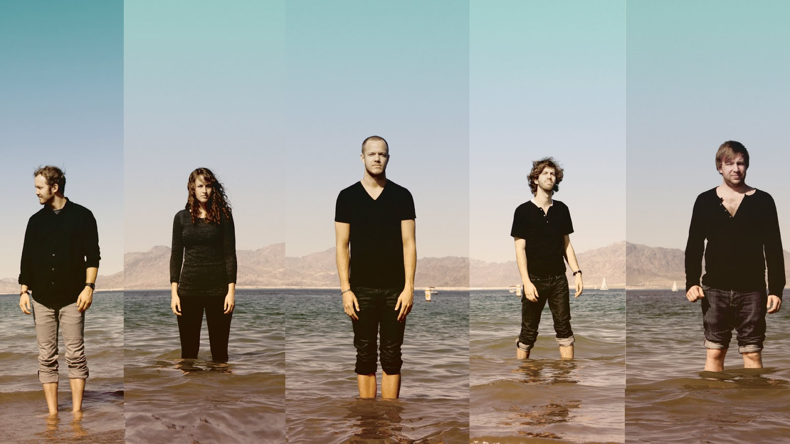
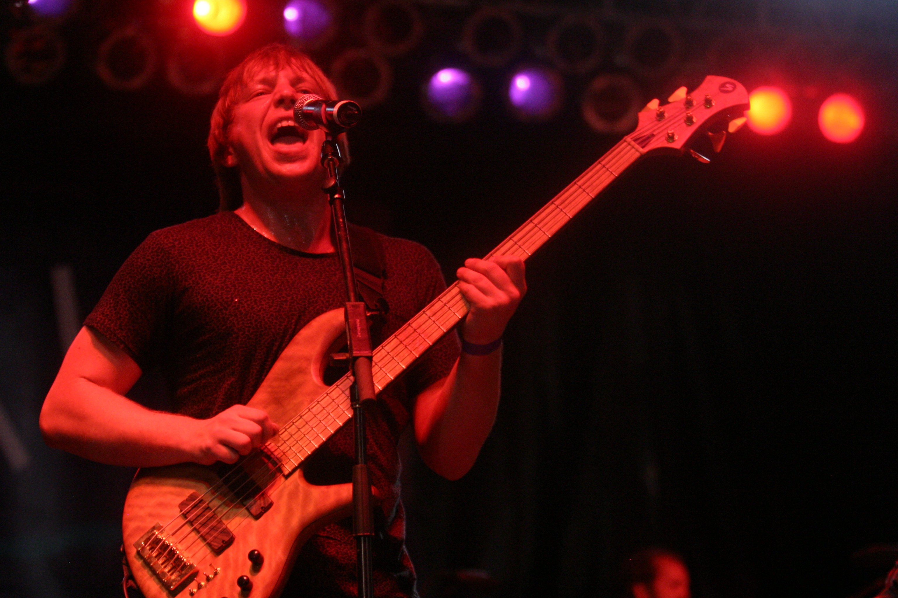

Dan Reynolds and Andrew Tolman started a band in 2008 at Brigham Young University, and recruited Andrew Beck, Dave Lemke, and Aurora Florence. They decided to name themselves Imagine Dragon, an anagram that is only known by the members of the band. They debuted in that same year releasing an EP called Speak To Me. This lineup, however, didn’t stay for long as Andrew Beck, Aurora Florence, and Dave Lemke departed from the group, eventually being replaced by Wayne Sermon and Andrew Tolman's wife Brittany Tolman, and Ben McKee.
Imagine Dragons quickly gathered a fanbase in Provo, Utah and in 2009 they relocated to Las Vegas in hopes for more success.
In 2009 they were given a huge opportunity to perform in front of a large crowd of almost 30,000 people, when at the Bite of Las Vegas Festival they filled in last minute for a band that was unable to perform. This helped kickstart Imagine Dragons’ rise to mainstream as they earned a series of local accolades in Las Vegas, earning them the award Best Local Indie Band of 2010 by Las Vegas weekly.
While this newfound success was earning the band fame and money, members still were leaving and being replaced, in August 2011 with co-creator of the band Andrew Tolmans and and his wife: Brittany Tolmans left. They were replaced by Daniel Platzman and a new keyboard player joined, Theresa Flaminio, only to leave in late 2011, shortly after the released of their first album.
The band landed a deal with Interscope and continue to be a success with hits but it wasn’t until 2012 that they really dived into the mainstream. In 2012 they released Radioactive and won a Grammy and went double platinum. They’ve since continued to release hits such as: Thunder, Demons, Believer, and many more, as well as producing songs for movies like Suicide Squad, Me Before You, and more. In 2018 they released their latest album, Origins and in 2019 they will be touring at Florence,Italy.